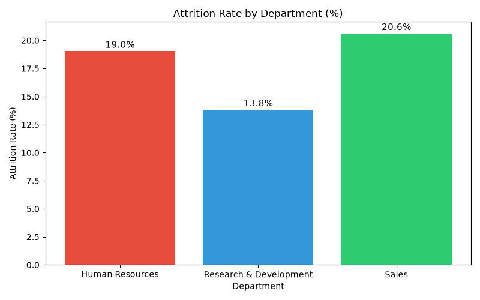
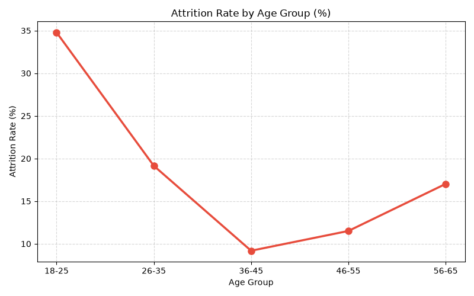
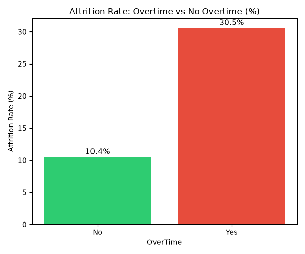
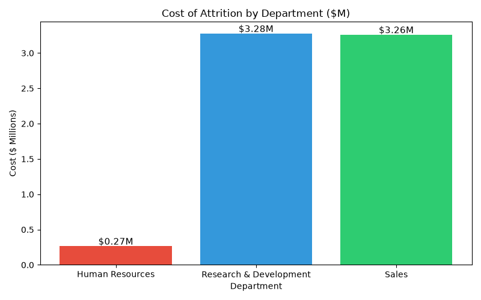

16.1%
Attrition Rate
237 out of 1,470 left
$57.3M
Total Cost of Attrition
Replacement cost estimate
$28,723
Avg Cost per Employee
50% of annual salary
Sales
Highest Risk Dept
20.6% attrition rate
Key Visualizations
Python · Matplotlib Analysis
Attrition Rate by Department

Attrition Rate by Age Group

Overtime vs Attrition

Cost of Attrition by Department

SQL Analysis Findings
MySQL Workbench · 5 Queries
Department Risk
Sales has highest attrition at 20.6%, followed by HR at 19.0%
Overtime Impact
Overtime employees have 3x higher attrition — 30.5% vs 10.4%
Salary Gap
Employees who left earned $2,046 less per month than those who stayed
Age Group Risk
Age 18-25 has 34.7% attrition — highest among all age groups
Business Recommendations
Action Plan based on Analysis
01
Reduce Overtime in Sales — Overtime employees are 3x more likely to leave. Hiring 2 extra staff in Sales could save $3.2M in attrition costs.
02
Salary Review for Junior Roles — Employees earning below $5,000/month have highest attrition. A 15% salary hike could significantly reduce turnover.
03
Young Employee Retention Program — 18-25 age group has 34.7% attrition. Mentorship programs and career growth plans can help retain young talent.